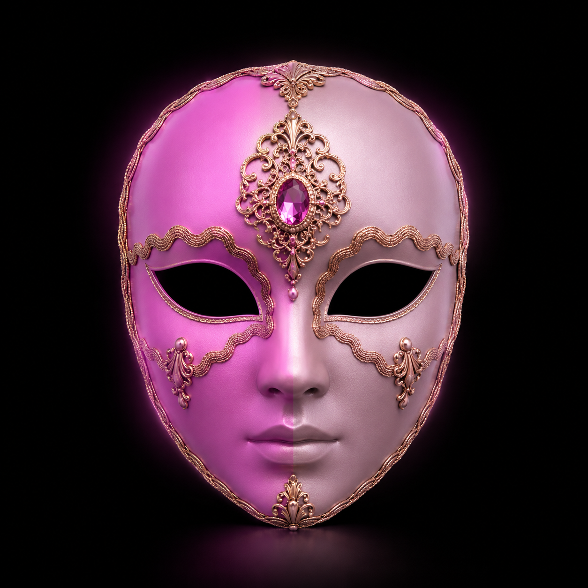

UNDERMASK
Find out how many are like you.
A private space designed to reveal your true alignment within society. Remove the mask, answer blindly, and see yourself without the noise of validation.

A private space designed to reveal your true alignment within society. Remove the mask, answer blindly, and see yourself without the noise of validation.
